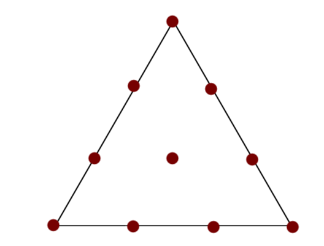

Your browser doesn't support the features required by impress.js, so you are presented with a simplified version of this presentation.
For the best experience please use the latest Chrome, Safari or Firefox browser.
درونیابی دوبعدی با اسپلاینهای حافظ تحدب
میثم پورگنجی
استادان راهنما:
دکتر اسمٰعيل بابليان
دکتر جمشید سعیدیان
مهر ۱۳۹۴
درونیابی دوبعدی
شرح مسألهی درونیابی دومتغیره
مسأله درونیابی دومتغیره: $$\left\{(x_1,y_1,z_1),\dots,(x_n,y_n,z_n)\right\}$$ $$\downarrow$$ $$f(x_i,y_i) = z_i,\quad i=1,\dots,n$$
فضای چندجملهای دومتغیره $\mathcal{P}_d$: فضای برداری توابع حقیقیمقدار به شکل $$p(x,y) = c_{ij}x^iy^j,\quad 0\le i+j \le d$$
چرایی مسأله درونیابی دومتغیره
تعمیم حالت یک بعدی: $$\mathcal{P}_d = \left<\left\{g_i\right\}_{i=1}^n\right>$$ $$\{t_i\}_{i=1}^n\subseteq\mathbb{R}^2$$ $$\{z_i\}_{i=1}^n$$
چندجملهای درونیاب: $$f(t_i)=z_i,\quad i=1,\dots,n$$
$$\exists \{c_i\}_{i=1}^n, f = \sum_{i=1}^nc_ig_i$$
اعمال شروط درونیابی: $$\sum_{i=1}^nc_ig_i(t_j)=z_j,\quad j=1,\dots,n$$
صورت ماتریسی: $$Mc=z$$
یک مورد خاص: درونیاب در فضای $\mathcal{P}_1$ برای گرههای واقع بر یک خط
$\mathcal{P}_1 = \left<1,x,y\right>$
گرهها واقع بر معادله خط $y=ax+b$: $\left\{(x_1,ax_1+b),(x_2,ax_2+b),(x_3,ax_3+b)\right\}$
$$M=\begin{bmatrix} 1 & x_1 & y_1\\ 1 & x_2 & y_2\\ 1 & x_3 & y_3 \end{bmatrix} = \begin{bmatrix} 1 & x_1 & ax_1+b\\ 1 & x_2 & ax_2+b\\ 1 & x_3 & ax_3+b \end{bmatrix} $$
آیا میتوان شرایطی را بر مسئله تحمیل نمود تا درونیاب به صورت یکتا مشخص شود؟
بلی! :)
توازن نقاط
تعریف) مجموعه نقاط گرهای، نسبت به $\mathcal{P}_d$ متوازن گفته میشود، هرگاه ماتریس $M$ نامنفرد باشد.
شرط کافی برای متوازن بودن) گیریم $d$ یک عدد صحیح مثبت مفروض باشد، قرار میدهیم $n = \left(\begin{matrix} d+2\\ 2 \end{matrix}\right)$. فرض کنیم $A = \{t_i\}_{i=1}^n = \cup_{i=1}^{d+1}\{t_{ij}\}_{j=1}^i$، یک مجموعه از نقاط دو به دو متمایز در $\mathbb{R}^2$ چنان باشند که برای گردایهای چون $\{L_i\}_{i=1}^{d+1}$ از خطوط مجزا در صفحه، برای هر $i=1,\dots,d+1$ نقاط $\{t_{ij}\}_{j=1}^i$ در $L_i$ صدق کنند اما در $L_{i+1}\cup\dots\cup L_{d+1}$ صدق نکنند. در این صورت $A$ نسبت به $\mathcal{P}_d$ متوازن است.
یک نمونه کاربردی از نقاط متوازن
گیریم $T$ یک مثلث با رئوس $v_1$، $v_2$ و $v_3$ باشد و \begin{equation} \label{15_ordi_eq_1} \xi_{ijk} = \frac{(iv_1+jv_2+kv_3)}{d},\quad i+j+k = d. \end{equation} در این صورت مجموعهی متشکل از $\left(\begin{matrix} d+2\\2 \end{matrix}\right)$ نقطهی $A=\{\xi_{ijk}\}_{i+j+k=d}$ نسبت به $\mathcal{P}_d$ متوازن است. 
مثلثسازی
تعریف) به پوستهی محدب تولید شده توسط سه نقطه بر صفحه، مثلث میگوئیم.
تعریف) به گردایهی $$\bigtriangleup=\{T_1,\dots,T_N\}$$ از مثلثهای واقع بر صفحه، یک مثلثسازی از $$\Omega=\cup_{i=1}^NT_i$$ گفته میشود، هرگاه هر جفت از مثلثهای $\bigtriangleup$ حداکثر در یک رأس یا در یک یال اشتراک داشته باشند.
مختصات گرانیگاهی
$$v = b_1v_1 + b_2v_2 + b_3v_3$$ $$b_1+b_2+b_3 = 1$$
چنجملهایهای پایهای برنشتاین
$$v = (b_1,b_2,b_3) \rightarrow B_{ijk}^d(v) = \frac{d!}{i!j!k!}b_1^ib_2^jb_3^k$$
$$\mathcal{P}_d = \left< \left\{B_{ijk}^d\right\}_{i+j+k=d} \right>$$
چند خاصیت خوب: $$0 \le B_{ijk}^d(v) \le 1,\quad \forall v\in T$$ $$\sum_{i+j+k=d}B_{ijk}^d(v) = 1, \forall v\in T$$
$B$-فرم
$$\forall p\exists\{c_{ijk}\}_{i+j+k=d}\left( p\in\mathcal{P}_d\Rightarrow p(v) = \sum_{i+j+k=d}c_{ijk}B_{ijk}^d(v) \right)$$
چند نامگذاری:
مشتق جهتی
تعریف) $$D_uf(v) = \frac{d}{dt}(v + tu)|_{t=0}$$
مختصات جهتی $$\overset{\rightarrow}{u} = \overset{\rightarrow}{w} - \overset{\rightarrow}{\tilde{w}} = (a_1,a_2,a_3)$$ $$a_i = \alpha_i-\beta_i$$ $$w = (\alpha_1,\alpha_2,\alpha_3), \tilde{w} = (\beta_1,\beta_2,\beta_3)$$
$$c^{(0)}_{ijk}(a) = c_{ijk}$$ $$c^{(l)}_{ijk}(a) = a_1c^{(l-1)}_{ijk}(a)+a_2c^{(l-1)}_{ijk}(a)+a_3c^{(l-1)}_{ijk}(a)^*$$
$$D_u^mp(v) = \frac{d!}{(d-m)!}\sum_{i+j+k=d-m}c_{ijk}^{(m)}(a)B_{ijk}^{d-m}(v)$$ ${}^*$رابطهی مذکور مبنای قاعدهای به نام الگوریتم کستلجو است.
تاکنون…
ارائهی شرایط کافی برای متوازن بودن نقاط و انتخاب نقاط واقع بر مثلث
$$\downarrow$$ مثلثسازی
$$\downarrow$$ تعریف پایههای برنشتاین بر یک مثلث
اسپلاینها
فضاهای اسپلاین
$$\mathcal{S}_d^0(\bigtriangleup) = \left\{ s\in C^0(\Omega) \middle| s\vert_T\in\mathcal{P}_d,\forall T\in\bigtriangleup \right\}$$
فضاهای اسپلاین با همواری بالاتر: $$\mathcal{S}_d^r(\bigtriangleup) = \mathcal{S}_d^0(\bigtriangleup) \cap C^r(\Omega)$$
تعریف کاربردیتر؟
فرض کنیم $T = < v_1 , v_2 , v_3 >$ و $\tilde{T} = < \tilde{v}_4 , v_3 , v_2 >$ دو مثلث باشند که در یال $e=< v_2 , v_3 >$ مشترک هستند. گیریم $$p(v) = \sum_{i+j+k=d}c_{ijk}B_{ijk}^d(v),\ \ \tilde{p}(v) = \sum_{i+j+k=d}\tilde{c}_{ijk}\tilde{B}_{ijk}^d(v)$$ که $\{B_{ijk}^d\}$ و $\{\tilde{B}_{ijk}^d\}$ چندجملهایهای پایهای برنشتاین متناظر با $T$ و $\tilde{T}$ باشند. فرض کنیم $u$ یک جهت دلخواه باشد که موازی $e$ نیست. در این صورت $$D_u^np(v) = D_u^n\tilde{p}(v),\quad\forall v\in e, n=0,\dots,r,$$ اگر و تنها اگر برای ${j+k=d-n, n=0,\dots,r}$ $$\tilde{c}_{njk} = \sum_{\nu+\mu+\kappa=n}c_{\nu,k+\mu,j+\kappa}B_{\nu\mu\kappa}^n(v_4).$$
واضح است که شروط به شکل $$\tilde{c}_{njk} = \sum_{\nu+\mu+\kappa=n}c_{\nu,k+\mu,j+\kappa}B_{\nu\mu\kappa}^n(v_4).$$ را میتوان به صورت شروطی خطی از $B$-ضرایب در نظر گرفت. بنابراین آنها را به شکل ماتریسی میتوان به صورت $$Ac = 0$$ نمایش داد. همچنین شرایط درونیابی $s(v_i) = z_i$ اسپلاین $s$ را میتوان به صورت $$Bc = z$$ نشان داد.
تاکنون…
تغییر نگرش از مختصات جهانی به مختصات محلی و مثلثسازی ناحیه
$$\downarrow$$ تعریف $B$-چندجملهایها
$$\downarrow$$ تعریف فضاهای اسپلاین و شرایط همواری با استفاده از $B$-ضرایب
تحدب اسپلاینها
تحدب
تعریف) تابع $f$، تعریف شده بر مثلث $T$، محدب در جهت $u$ گفته میشود، هرگاه \begin{equation*} \frac{f(w_3) - f(w_2)}{|w_3-w_2|}\ge\frac{f(w_2)-f(w_1)}{|w_2-w_1|} \end{equation*} برای مجموعهی همهی نقاط مرتب $w_1$، $w_2$ و $w_3$ واقع در $T$ که در خط حاصل از بردار هادی $u$ صدق میکنند. گوییم $f$ محدب است اگر و تنها اگر در تمام جهات محدب باشد.
صورت معادل) تابع $f$ در جهت $u$ محدب است اگر و تنها اگر $D_u^2f(v) \ge 0$ برای هر $v\in T$.
یک خبر خوب!
اگر اسپلاین $s\in\mathcal{S}_d^1(\bigtriangleup)$ چنان باشد که $s|_T$ به ازای هر $T\in\bigtriangleup$ محدب باشد، در ای صورت $s$ بر $\bigtriangleup$ محدب خواهد بود.
چند نمادگذاری: $$E_1c_{ijk} = c_{i+1,j,k}, E_2c_{ijk} = c_{i,j+1,k}, E_3c_{ijk} = c_{i,j,k+1}$$ $$\Delta_{mn}c_{ijk} = E_mc_{ijk} - E_nc_{ijk},\quad m,n\in\{1,2,3\}$$
شرط کافی برای تحدب در راستای یک یال
چندجملهای $p$ در راستای $$u=v_2-v_1$$ محدب است، هرگاه برای $$i+j+k=d-2$$ داشته باشیم \begin{equation*} \Delta_{21}^2c_{ijk}=c_{i,j+2,k}-2c_{i+1,j+1,k}+c_{i+2,j,k}. \end{equation*}
شرط کافی برای تحدب در راستای دلخواه
فرض کنید \begin{equation} \label{eqn_3.8} u=\eta_2(v_2-v_1) + \eta_3(v_3-v_1) \end{equation} برای اعدادی حقیقی $\eta_2$ و $\eta_3$. آنگاه $p$ در جهت $u$ محدب است، هرگاه \begin{equation} \label{eqn_3.9} \begin{bmatrix} \eta_2 & \eta_3 \end{bmatrix} A_{ijk}\begin{bmatrix} \eta_2\\ \eta_3 \end{bmatrix}\ge 0,\quad i+j+k=d-2 \end{equation} که \begin{equation} \label{eqn_3.10} A_{ijk} = \begin{bmatrix} \bigtriangleup_{21}^2c_{ijk} & \bigtriangleup_{21}\bigtriangleup_{31}c_{ijk} \\ \bigtriangleup_{21}\bigtriangleup_{31}c_{ijk} & \bigtriangleup_{31}^2c_{ijk} \end{bmatrix}. \end{equation}
چندجملهایهای $q_m(t)$
تعریف میکنیم: $$q_m(t) = a_mt^2 + 2b_mt(1-t) + c_m(1-t)^2,\quad m=1,2,3$$ که در آن: $$ a_1=\bigtriangleup_{21}^2c_{ijk},\ b_1=\bigtriangleup_{21}\bigtriangleup_{31}c_{ijk},\ c_1=\bigtriangleup_{31}^2c_{ijk}, $$ $$ a_2=\bigtriangleup_{32}^2c_{ijk},\ b_2=\bigtriangleup_{32}\bigtriangleup_{12}c_{ijk},\ c_2=\bigtriangleup_{21}^2c_{ijk}, $$ $$ a_3=\bigtriangleup_{13}^2c_{ijk},\ b_3=\bigtriangleup_{13}\bigtriangleup_{23}c_{ijk},\ c_3=\bigtriangleup_{23}^2c_{ijk}. $$
شرط معادل برای شرط کافی تحدب
ماتریس $$A_{ijk}$$ معین نامنفی است اگر و تنها اگر $$q_m(t)\ge 0$$ برای $m=1,2,3$ و هر $0\le t\le 1$.
تاکنون…
ساخت فضاهای اسپلاین با استفاده از مثلثسازی دامنه
$$\downarrow$$ تعریف شرطهای درونیابی و همواری فضاهای اسپلاین به صورت دستگاه معادلات خطی $$Ac = 0, Bc = z$$
$$\downarrow$$ ارائهی شروط غیرخطی تحدب $q_m(t)$